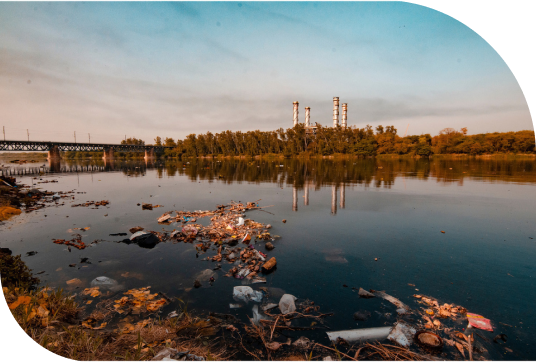
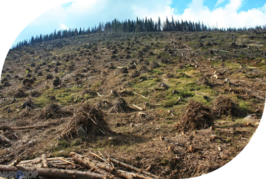
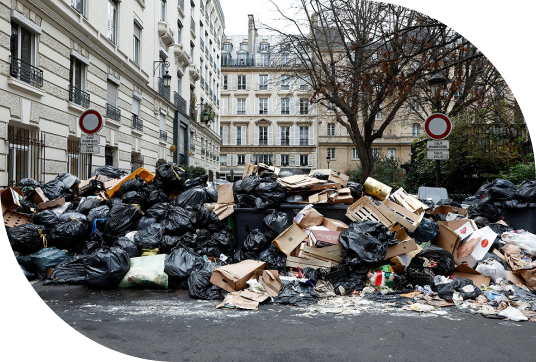

| Ликвидация свалок |
|
 |
| Вывоз отходов на организованные и неорганизованные полигоны представляют собой эпидемиологическую опасность. Происходит глубинное заражение грунта, возгорание выделяемого газа, попадание ядовитого дыма в атмосферу отравляет все живое в радиусе нескольких километров.
Наши организовывают рейды по загрязненным местам города и вывозят мусор на переработку. |
|
 |
|  |
Очищение водоемов |
|
Множество водоемов не соответствует даже самым “мягким” нормам по чистоте. Причин загрязнения водоемов множество, одним из них является антропогенный фактор.
Способы очистки искусственных водоемов
1)Химический
2)Биологический
3)Механический
4)Очистка ультрафиолетовым излучением
|
|
Стать волонтером |
| Посадка деревьев |
 |
| Проблема вырубки лесов является одной из самых острых экологических проблем на планете.
Причины вырубки лесов
Среди распространенных причин вырубки деревьев стоит назвать такие:
древесина имеет высокую ценность как строительный материал и сырье для бумаги, картона, изготовления бытовых предметов;
нередко уничтожают леса ради расширения новых сельскохозяйственных угодий;
для прокладки железнодорожных путей и дорог.
|
|
Стать волонтером |
|  |
Уборка мусора |
| Одной из самых актуальных проблем ХХI века в России можно назвать ситуацию с мусором. Мусор на самом деле одна из самых серьезных угроз, которую умудрилось создать себе человечество.
На свалки в России всё ещё попадает почти 60 миллионов тонн бытовых отходов ежегодно.
|
|
Стать волонтером |

 Добровольческое объединение “Зелёная планета”
Все права защищены
Добровольческое объединение “Зелёная планета”
Все права защищены